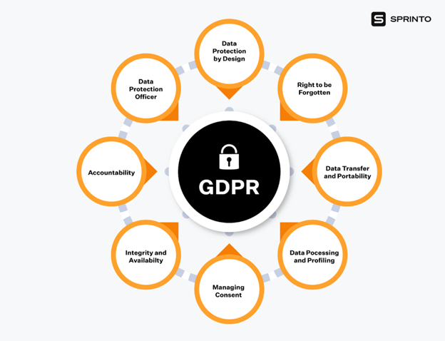

General Data Protection Regulation - (GDPR)
- What is GDPR?
- Data protection law that applies to organizations handling personal data for EU residents.
- Core Principles:
- Lawfulness, Fairness, and Transparency
- Purpose Limitation
- Collect data for specified, explicit, and legitimate purposes.
- Data Minimization
- Limit data collection to what is necessary.
- Accuracy
- Limit data collection to what is necessary.
- Storage Limitations
- Keep data only as long as necessary.
- Integrity and Confidentiality
- Ensure appropriate security measures.
- Accountability
- Remain accountable and ensure data protection.
- Consent:
- Organizations must obtain clear, affirmative consent for data processing.
- Organizations must honor data subject rights, including access, rectification, erasure, and data portability.
- Data Security:
- Implement appropriate technical and organizational measures to protect data.
- Conduct Data Protection Impact Assessments.
- Maintain records of processing activities.
- Breach Notifications:
- Report data breaches to supervisory authorities within 72 hours.
- Notify affected individuals of high-risk breaches.
- Compliance Steps:
- Conduct a data audit.
- Establish a lawful basis for data processing
- Update privacy notices and consent mechanisms
- Implement data subject request procedures
- Enhance data security measures
- Train staff on GDPR requirements
- Review and update contracts with data processors
- Develop a breach response plan.
- Penalties:
- The severity of the penalty relies on 10 criteria:
- Gravity and nature
- Intention
- Mitigation
- Precautionary measures
- History
- Cooperation
- Cooperation
- Data category
- Proactive reporting
- Certification
- Aggravating/mitigating factors
- Depending on the severity of the infringement two different fines can get handed out:
- In a lower severity case, an organization can be fined up to €10 million or 2% of the firm’s worldwide annual revenue from the previous financial year, whichever is higher.
- In a higher severity case, up to €20 million or 4% of the firm’s worldwide annual revenue from the previous financial year, whichever is higher.
- There are other punishments besides just fines:
- Warnings.
- Temporary or permanent bans on data processing.
- Orders to rectify, restrict, or erase data
- Suspension of data transfers
Top Fines:
- Meta: €1.2 billion ($1.3 billion) in 2023 for violating data transfer regulations.
- Amazon: €746 million ($781 million) in 2021 for non-compliant advertising practices.
- Instagram: €405 million ($427 million) in 2022 for violating children’s online privacy.

(Vora, 2024)
Network and Information Security Directive 2 - (EU)
- Timeline:
- Updated version of the Network and Information Security directive from 2016.
- Recently enacted in January of 2023.
- Member states must transpose NIS2 into national law by October 17, 2024.
- Organizations must comply with the requirements by October 18, 2024.
- Purpose:
- NIS2 aims to establish a high common level of cybersecurity across the EU by:
- Expanding the number of covered sectors from 7 to 15.
- Previously Covered Sectors:
- Energy
- Banking
- Drinking Water
- Digital Infrastructure
- Digital providers
- Health
- Transport
- Newly Covered Sectors:
- Research
- Space
- Public Administration
- Waste and Wastewater Management
- Postal and Courier Services
- ICT Service Management
- Providers of publicly available electronic communication services
- Production & processing (food, medical, products, chemicals, and more)
- Dramatically increasing the requirements for enforcing cybersecurity, Non-compliance can lead to legal ramifications for management teams.
- Requirements:
- Organizations covered by NIS2 must implement:
- Risk assessment and management procedures
- Incident detection and response capabilities
- Regular cybersecurity audits
- Supply chain security measures
- Encryption and vulnerability disclosure processes
- Reporting:
- Authorities must be notified of significant cybersecurity incidents within 24 hours.
- Organizations must provide updates on mitigation measures taken.
- Enforcement and Penalties:
- Fines of up to €10 million or 2% of global annual turnover for non-compliance.
- Potential personal liability for management teams.

(LAMCOM, 2024)
Italy Cybercrime Laws:
- Article 615 ter of the Italian Criminal Code:
- Provides punishment for unauthorized access to computers and IT systems.
- Can be sentenced to up to three years in prison.
- If a person uses their access for different reasons than those of which they were authorized is considered a criminal offense.
- It has also been decided that a password protected Dropbox account can also be considered an IT system under this law.
- Article 635 Quater:
- Punishes Denial-of-Service attacks.
- “Those who destroy, damage, or make unusable by ‘introducing or transmitting’ data, information or programmes, or severely impair their working of other people’s computers or IT systems” (Bianchi & Bevilacqua, 2023).
- Violators are subject to imprisonment for 1 to 5 years
- Article 640 ter
- Punishes IT fraud, such as phishing.
- Stealing or using a person's digital identity to carry out IT fraud.
- Can result in imprisonment for 2 to 6 years and a fine from €600 to €3,000
- Article 615 quinquies
- Punishes those who use malware to infect IT systems
- Subject to up to 2 years in prison
- Fines not exceeding €10,329